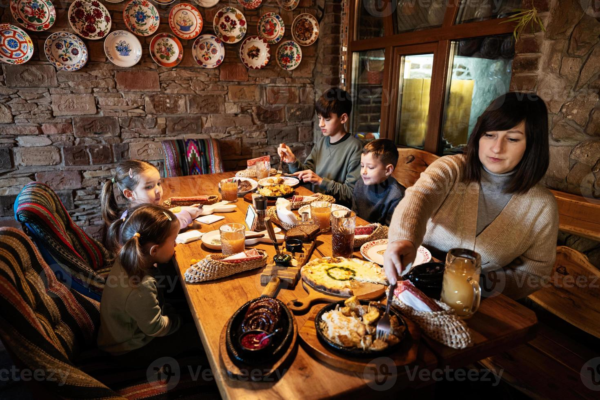

Restaurante “La Senda del Tiempo” En lo profundo de un callejón empedrado de la ciudad, donde la luz de las farolas parece titilar con nostalgia, se encuentra “La Senda del Tiempo”, un restaurante que no aparece en todos los mapas. Su fachada, de madera envejecida y cristales tallados con motivos antiguos, sugiere una historia que va más allá de la comida: aquí, cada plato es un recuerdo, cada mesa un testigo de secretos antiguos. El origen El restaurante fue fundado hace casi un siglo por Don Elías Montenegro, un viajero que recorría continentes en busca de recetas perdidas. Se dice que regresó a la ciudad con un cuaderno lleno de secretos culinarios heredados de culturas que el mundo había olvidado. Cada rincón del restaurante conserva un fragmento de sus viajes: un mosaico marroquí, una lámpara otomana, un cuadro japonés que parece moverse con la luz del día. La experiencia gastronómica Más que un menú, La Senda del Tiempo ofrece una travesía sensorial: los platos cambian según la estación y según la historia que el chef quiere contar esa semana. Por ejemplo, un risotto que evoca la bruma de los lagos alpinos, acompañado de un vino que se asemeja a los atardeceres de la Toscana; o un postre inspirado en un jardín de sakura japonés, servido con té aromático que transporta al comensal a otra era. Cada comida viene acompañada de pequeñas notas manuscritas que relatan la procedencia de los ingredientes y la historia detrás del plato. Los guardianes del lugar No todo es comida: el restaurante está lleno de personajes que parecen salidos de una novela. Doña Mariana, la maestra pastelera, aún recuerda las recetas que Don Elías le enseñó, y su risa resuena entre las paredes de ladrillo. Tomás, el camarero jefe, es un antiguo historiador que explica a los clientes el significado de cada objeto decorativo, como si cada mesa fuera un portal al pasado. Incluso se dice que algunos fantasmas de antiguos viajeros todavía visitan el lugar, dejando un susurro de anécdotas mientras los clientes cenan. La magia oculta Se rumorea que quienes comen aquí con el corazón abierto experimentan algo más que sabor: algunos afirman haber visto reflejos de momentos pasados de su propia vida en los espejos antiguos, o sentir que ciertos aromas despiertan memorias olvidadas. Por eso, entrar en La Senda del Tiempo es un rito, no solo una cena: es viajar a través de las historias que cada plato guarda, mientras la ciudad moderna desaparece más allá de la puerta principal. El legado Hoy, La Senda del Tiempo es más que un restaurante: es un santuario de experiencias, donde la gastronomía se encuentra con la memoria y la historia personal. Cada cliente que entra se convierte en parte de esa narrativa interminable, dejando su propia huella, su propia historia, en un lugar que vive más allá del tiempo. Si quieres, puedo hacer una versión aún más épica, con secretos, sociedades secretas de chefs, menús que cambian según el destino del comensal y personajes con trasfondos oscuros y misteriosos, que casi convierta al restaurante en un “mundo vivo” dentro de tu historia.